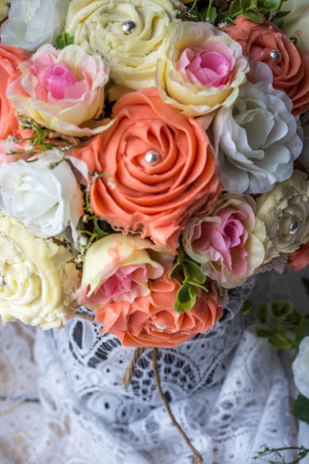
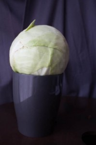
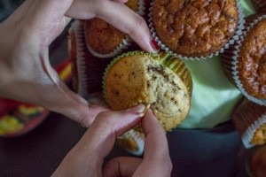
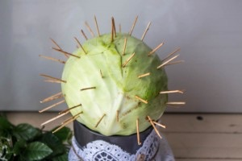
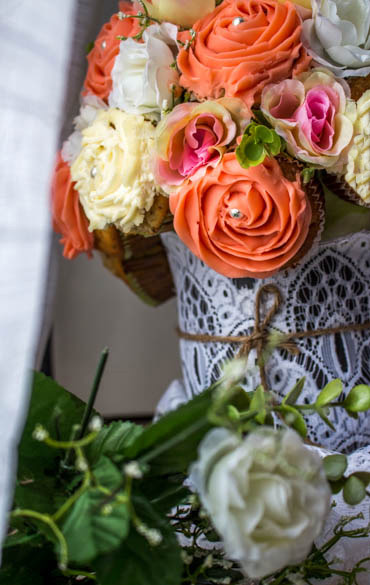
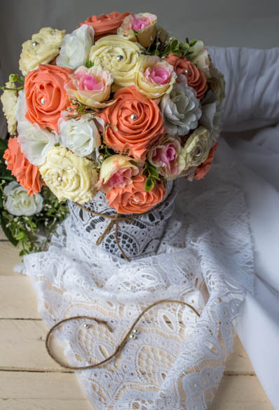
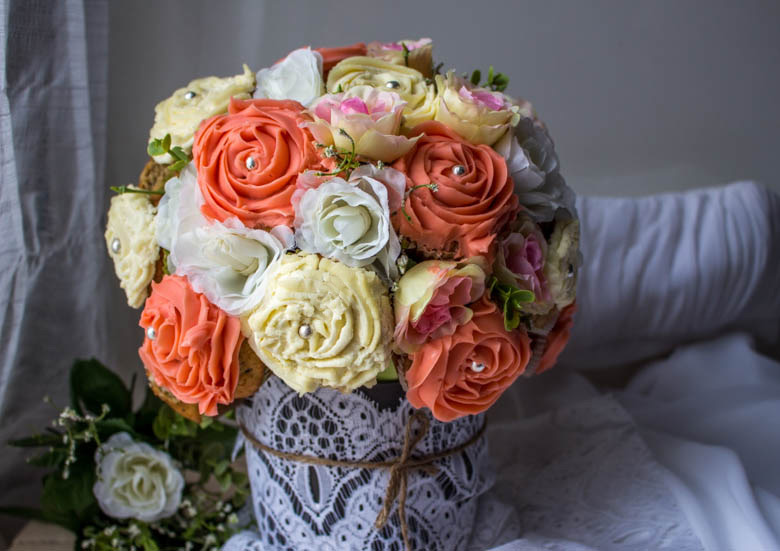
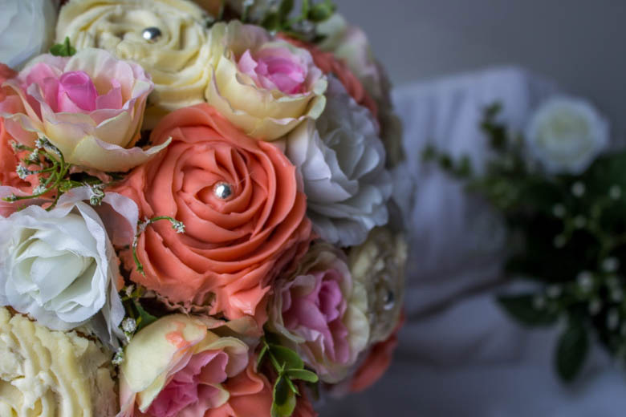

Bouquet cupcakes de la mariée {« YES I DO »}

Je vous présente aujourd’hui le bouquet de fleurs de la mariée! Vous n’avez pas remarqué? Il s’agit en fait d’un bouquet cupcakes 🙂
Aujourd’hui c’est le grand rendez vous de la battle food!!! Voila donc un petit rappel, la battle food est un défi culinaire entre blogueurs et non blogueurs autour d’un thème choisi, juste pour le plaisir de cuisiner, d’inventer et de partager de merveilleuses recettes!
Cette session a été organisée par un blog que j’adoooore « la cantine des cousins » sur le thème de la cuisine TROMPE L’ŒIL »!!
Comment dire…quand j’ai lu le thème je suis restée perplexe un court instant puis les idées ont commencé à fuser! Entre les pâtes qui en fait s’avèrent être des calamars, le saucisson qui n’est enfaite que du chocolat, entres autres, j’ai décidé finalement de me lancer dans un bouquet de mariée 🙂 !! Mais attention pas n’importe lequel: un bouquet cupcakes de mariée!!!
J’avais déjà réalisé par le passé des gâteaux avec comme décoration des roses réalisées avec un glaçage mais jamais de bouquet tout entier! J’ai adoré penser et réaliser cette recette. J’ai décidé de réaliser deux différents cupcakes pour cette recette: un à la banane,aux pépites de chocolat et un glaçage mascarpone et un autre à la noix de coco, aux pépites de chocolat et un glaçage au beurre. Mon bouquet cupcakes a eu l’effet escompté car je me suis amusée à montrer la photo à plusieurs personnes qui sont toutes tombées dans le panneau :D!
Et vous qu’en pensez vous?
J’espère que cette recette vous plaira et qu’elle vous inspirera!
Pour ceux qui s’imaginent que cette réalisation est trop compliquée à faire, ôtez vous cette idée de la tête car un vase, un chou blanc (ou boule de polystyrène), des cure-dents, quelques fausses fleurs et un soupçon de patience feront largement l’affaire!
Ingrédients
- Farine - 180g
- Sucre - 120g
- Banane - 2
- Pepites de chocolat - 125g
- Yaourt nature - 1
- Levure chimique - 1 sachet
- Oeufs - 4
- Beurre - 125g
- Mascarpone - 500g
- Sucre glace - 6 càs
- Extrait de vanille - 1 càs
- Beurre pommade - 250g
- Sucre glace - 3 càs
- Extrait de vanille - 1 càs
- Colorant rose - 1 pointe
- Mêmes ingrédients que précedemment
- PAS de bananes
- Noix de coco rapée - 100g
- Chou-blanc ou boule de polystyrene - 1
- Cure-dents
- Vase
Instructions
- Préchauffer le four à 180°
- Dans un bol mélanger la farine et la levure
- Dans un saladier, battre le sucre et les œufs jusqu'à ce que le mélange blanchisse
- Ajouter le mélange farine - levure et mélanger
- Ajouter les œufs un à un
- Ajouter le beurre fondu et mélanger jusqu'à obtenir une pâte bien homogène
- Découper la banane en petits dés
- Incorporer les bananes (ou noix de coco râpée) et les pépites de chocolat dans la pâte
- Mélanger
- Remplir les caissettes aux 3/4
- Enfourner 20min à 180°
- Laisser surtout bien refroidir avant de glacer
- Dans un bol détendre le mascarpone avec l'extrait de vanille
- Ajouter le sucre glace
- Mélanger délicatement pour bien incorporer le sucre
- Garder au frais en attendant de pouvoir glacer les cupcakes
- Fouetter le beurre avec le sucre glace jusqu'à ce que le mélange blanchisse
- Ajouter l'extrait de vanille et mélanger
- Incorporer le colorant jusqu'à obtenir la couleur désirée
- Conserver au frais jusqu'à utilisation
- Choisir un vase à partir duquel vous allez constituer votre bouquet
- Le support du bouquet dépendra du diamètre de votre vase
- Personnellement j'ai choisi un chou blanc comme support mais vous pouvez acheter un peu partout sur internet des boules de polystyrène du diamètre de votre choix
- Enfoncer légèrement le chou dans le vase pour que cela tienne
- Disposer vos cupcakes en partant de la base du vase un à un en enfonçant des cure dents au fur et à mesure pour les faire tenir au support. Personnellement j'ai mis deux cure dents par cupcakes
- Une fois que tous vos cupcakes sont bien fixés, vous pouvez commencer à les glacer
- Quand tout vos cupcakes sont glacés, vous pouvez ajouter de la déco en plus telle que des fausses fleurs, des fausses feuilles, des boules argentés sucrés etc...








Les tips de la communauté
Grand succès avec 98 commentaires très enthousiastes. Les lecteurs admirent la présentation en bouquet et la qualité du résultat final. L'auteure reçoit de nombreux compliments sur la créativité.
Astuces
- Présenter les cupcakes en bouquet pour un effet visuel époustouflant
- Adapter les couleurs et décors au thème du mariage
Variantes suggérées
- Varier les saveurs des cupcakes selon les préférences des convives
- Modifier les décors floraux en fonction du style de mariage souhaité
Ajustements signalés
- que je continue mon tour des blogs pour voir un peu toutes les participations 🙂 Bisous